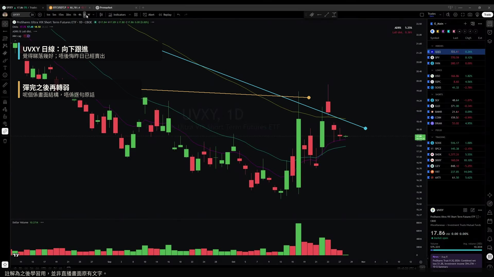
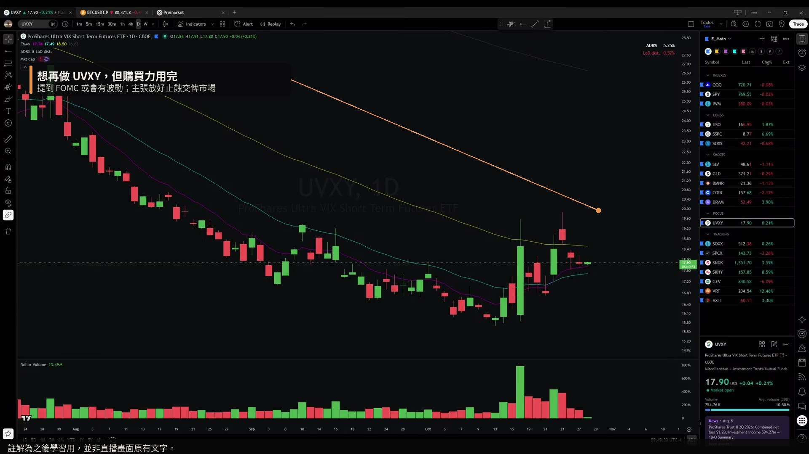
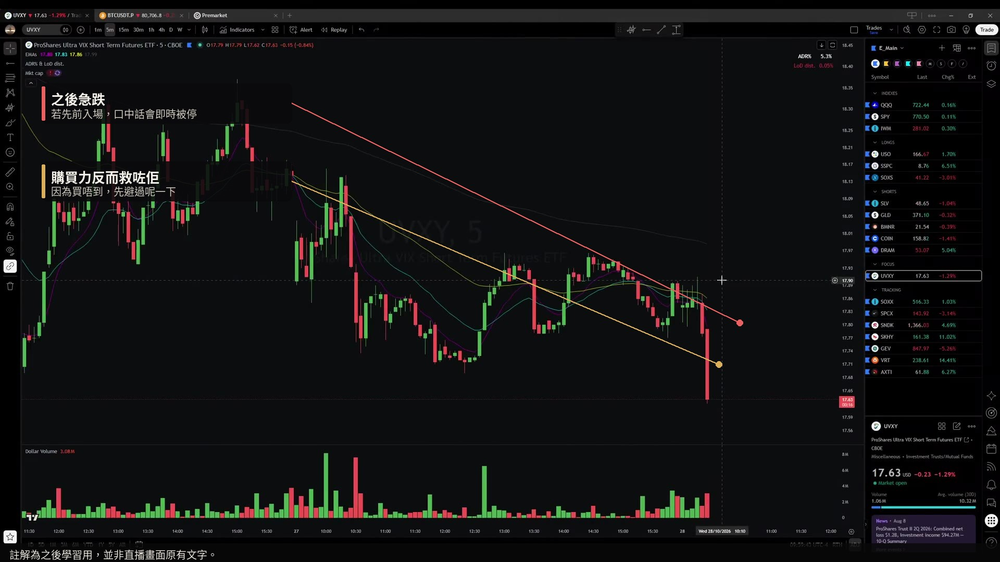

概要
先確認賣出方向，之後想再做卻做唔到
19:21 佢話 UVXY 睇落幾好，正在向下跟進，唔後悔昨日已經賣出。中間有一段空白同閒聊。28:00 再說好想做呢隻 UVXY，但呢次購買力用完。提到 FOMC 或會帶來波動，不過唔算大事，只要放好止蝕，交俾市場。
約 38:25 大市急彈時，佢補充：若先前入場 UVXY，會即時被停；購買力反而救咗佢。呢段連同 QQQ 五分鐘一齊見「急彈」那科。
圖一
UVXY 日線：向下跟進
直播 19:25

原話
The UVXY is looking pretty good actually. Wow, this is following through to the downside. But I'm not regretting selling yesterday.
UVXY 其實睇落幾好。哇，呢下係向下跟進。但我唔後悔昨日已經賣出。
Whisper 把 selling 聽成 styling；按 YouTube 同語境更正。
點樣讀
呢段係確認昨日賣出之後，價格繼續向下，所以唔後悔。
唔好把「睇落幾好」讀成而家先開新倉；28:00 先再說想再做。
圖二 · 其後
想再做 UVXY，但購買力用完
直播 28:05

原話
I really like to take this UVXY, but I run out of buying power this time. Yeah, I think it's fine. And given that we could get some volatility because of the FOMC, but not really a big deal. Just put the stop order on and then let it work for you.
我好想做呢隻 UVXY，但呢次購買力用完。我覺都冇所謂。雖然因為 FOMC 或會有波動，但唔算大事。就放好止蝕單，然後交俾佢為你運作。
點樣讀
想做卻做唔到，所以把重點放喺止蝕同讓倉位自己工作，而唔係再追。
FOMC 只係原話提到嘅事件風險，唔當獨立交易規則。實際有冇掛到單，畫面睇唔到。
圖三 · 其後
之後急跌：若入場會即時被停
直播 38:40

原話
Well, pretty strong bounce. Like my buying power has saved me again. Like if I've entered UVXY, then I will get stopped out immediately.
係頗強嘅反彈。我嘅購買力又再救咗我一次。如果我入場咗 UVXY，就會即時被停。
同時間 QQQ 五分鐘見到急彈，見「急彈」那科。Whisper 把 UVXY 聽成 uxy。
點樣讀
購買力用完呢件事，事後變成避過一次即時止蝕。呢個係回顧，唔係教人故意唔留購買力。
「頗強嘅反彈」主要對住大市；UVXY 呢幅見到同期急跌。
附註
注意事項
- 12:11–19:21 有一段幾乎冇對白；16:20–19:21 只有短答，唔單獨成科。
- 畫面睇唔到倉位或者止蝕價，所以唔寫死呢啲數字。